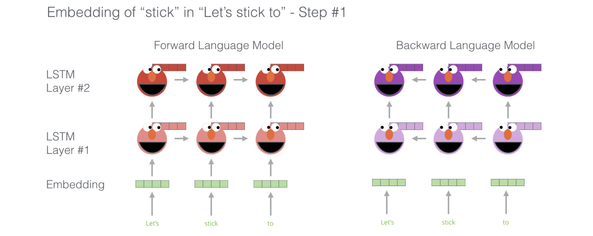
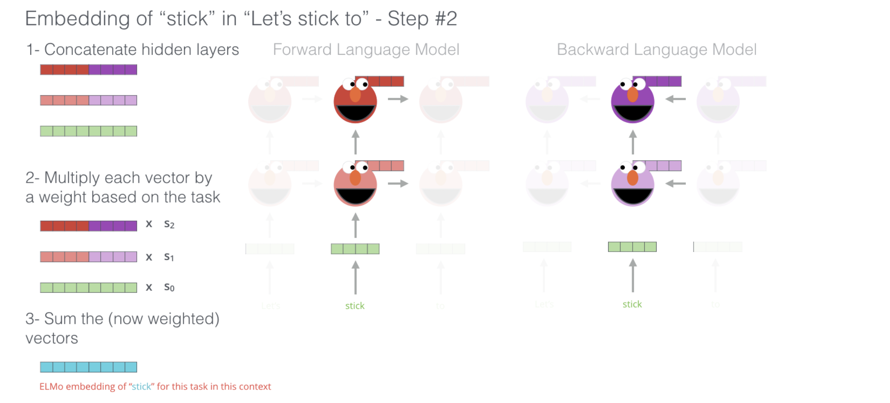

4.3.1. Embeddings from Language Models (ELMo)
Contents
4.3.1. Embeddings from Language Models (ELMo)#
ELMo is an NLP framework developed by AllenNLP. ELMo word vectors are calculated using a two-layer bidirectional language model (biLM). Each layer comprises forward and backward pass.
Unlike traditional word embeddings such as Word2Vec (link to previous chapter), GloVe (link to previous chapter) or FastText (link to previous chapter), the ELMo vector assigned to a token or word is actually a function of the entire sentence containing that word. Therefore, the same word can have different word vectors under different contexts as explained in Contextual Word embeddings (link to previous chapter).
ELMO - Brief Overview#
Key idea:
Train a
forward LSTM-based language modeland abackward LSTM-based language modelon some large corpus.Use the hidden states of the LSTMs for each token to compute a vector representation of each word.
A step in the pre-training process of ELMo: Given "Let's stick to" as input, predict the next most likely word – a language modeling task. When trained on a large dataset, the model starts to pick up on language patterns. It’s unlikely it’ll accurately guess the next word in this example.
More realistically, after a word such as hang, it will assign a higher probability to a word like out (to spell hang out) than to camera.
We can see the hidden state of each unrolled-LSTM step peaking out from behind ELMo’s head. Those come in handy in the embedding proecss after this pre-training is done.
ELMo actually goes a step further and trains a bi-directional LSTM – so that its language model doesn’t only have a sense of the next word, but also the previous word.

ELMo comes up with the contextualized embedding through grouping together the hidden states (and initial embedding) in a certain way (concatenation followed by weighted summation).

Implementation of ELMo word embeddings using Python-Tensorflow#
Run these command before running the code in your terminal to install the necessary libraries.
pip install "tensorflow>=2.0.0"
pip install --upgrade tensorflow-hub
import necessary libraries#
import tensorflow_hub as hub
import tensorflow.compat.v1 as tf
tf.disable_eager_execution()
Load pre trained ELMo model#
elmo = hub.Module("https://tfhub.dev/google/elmo/3", trainable=True)
Create an instance of ELMo#
documents = ["I will show you a valid point of reference and talk to the point",
"Where have you placed the point"]
embeddings = elmo(documents,
signature="default",
as_dict=True)["elmo"]
init = tf.global_variables_initializer()
sess = tf.Session()
sess.run(init)
Print word embeddings for word point in given two sentences#
print("Word embeddings for the first 'point' in first sentence")
print(sess.run(embeddings[0][6]))
Word embeddings for the first 'point' in first sentence
[-0.18793747 -0.23970088 0.3799212 ... 0.6024189 0.24705264
0.5594175 ]
print("Word embeddings for the second 'point' in first sentence")
print(sess.run(embeddings[0][-1]))
Word embeddings for the second 'point' in first sentence
[ 0.37914592 0.00217749 0.8026248 ... 0.3467365 -0.11317912
0.32619435]
print("Word embeddings for 'point' in second sentence")
print(sess.run(embeddings[1][-1]))
Word embeddings for 'point' in second sentence
[-0.0284084 -0.04353216 0.04130162 ... 0.02583168 -0.01429837
-0.01650422]
The output shows different word embeddings for the same word point used in a different context in different sentences (also the embedding is different in case of same sentence but different context).